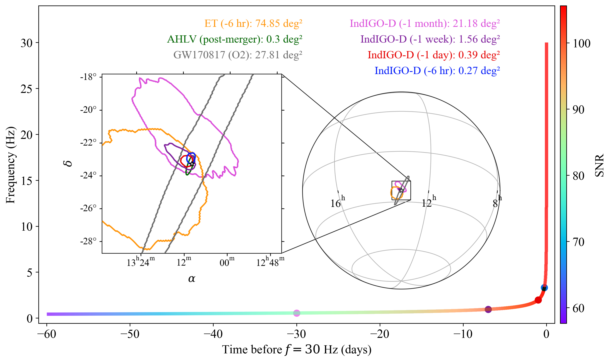

IndIGO-D: gravitational-wave astronomy in the decihertz band
Paper: Probing Compact Binary Coalescences in the Decihertz GW Band with IndIGO-D
There is a large observational gap between the millihertz band targeted by LISA and the frequencies accessible to terrestrial gravitational-wave detectors. The decihertz band, roughly (0.1)–(10) Hz, is especially interesting because many compact binaries pass through it shortly before entering the ground-based detector band.
A stellar-mass binary observed by LISA may still be years away from merger. The same class of system observed in the decihertz band can instead be followed during the final months, days and hours before coalescence.
The IndIGO-D concept
IndIGO-D is a decihertz gravitational-wave observatory concept being studied within the IndIGO community.
In our work we consider one particular realization: three spacecraft in heliocentric orbit forming an L-shaped Michelson interferometer. Two orthogonal arms, each (1000,) long, meet at a common vertex, making the geometry conceptually similar to a terrestrial L-shaped interferometer, but placed in space.
Illustration of the heliocentric motion of the three-spacecraft IndIGO-D configuration considered in our study.
Our study is not a complete mission-design or technological-feasibility study. We take the heliocentric L-shaped geometry and an assumed detector sensitivity as inputs, calculate its time- and frequency-dependent gravitational-wave response, and ask what compact-binary astrophysics such an instrument could enable.
The orbital motion is important. Compact binaries can remain observable for months or years, during which the detector changes both its position and orientation. This produces amplitude, phase and Doppler modulations that carry information about the source direction.
Bridging gravitational-wave bands
For the sensitivity assumed in our study, a GW170817-like binary neutron star system is observable with IndIGO-D out to a horizon redshift of about \(z \sim 0.3\).
Such systems would later enter the band of terrestrial detectors, providing multiband observations of the same binary.
The same frequency range also gives access to binaries containing intermediate-mass black holes. Systems with total masses around \(10^2\)–\(10^3\,M_\odot\) occupy a region where a decihertz detector complements both LISA and terrestrial observatories.
Early warning
For me, one of the most interesting aspects of the study is the possibility of obtaining useful sky localization well before a neutron-star merger.
For a simulated GW170817-like binary, using three months of IndIGO-D data, we obtain the following 90% sky-localization areas:
| Time before merger | 90% sky area |
|---|---|
| 1 month | \(21.18\,\mathrm{deg}^2\) |
| 1 week | \(1.56\,\mathrm{deg}^2\) |
| 1 day | \(0.39\,\mathrm{deg}^2\) |
| 6 hours | \(0.27\,\mathrm{deg}^2\) |
The improvement comes from accumulating a long stretch of inspiral while the orbital motion of the detector continuously modulates the signal.

Sky localization of a GW170817-like binary at different pre-merger epochs. The time-frequency track is coloured by the accumulated signal-to-noise ratio. IndIGO-D localizes the source to about \(21\,\mathrm{deg}^2\) one month before merger, \(1.6\,\mathrm{deg}^2\) one week before merger, and below \(0.3\,\mathrm{deg}^2\) six hours before merger.
A localization of order a square degree a week before merger changes the character of electromagnetic follow-up. Rather than reacting only after the gravitational-wave event, wide-field telescopes can know where to look while the binary is still approaching merger.
For comparison, in the configuration studied in the paper, the same source observed with the Einstein Telescope is localized to roughly \(75\,\mathrm{deg}^2\) six hours before merger.
Other science in the decihertz band
The long low-frequency inspiral is also useful for physics that can become progressively harder to measure as binaries approach merger. Examples include residual orbital eccentricity and weak environmental effects such as perturbations from dense dark-matter distributions around intermediate-mass black holes.
These effects may be small instantaneously but can accumulate over the very large number of orbital cycles observed in the decihertz band.
For the adopted sensitivity and population assumptions, we estimate a binary-neutron-star detection rate of roughly 76–767 yr⁻¹.
The range is dominated by the uncertainty in the local BNS merger rate.
The broader point
The attraction of the decihertz band is that it connects different parts of gravitational-wave astronomy.
LISA probes the slow, early evolution of many compact binaries. Ground-based detectors observe their final inspiral and merger. A decihertz observatory occupies the region in between, where binaries evolve rapidly enough to provide practical early warnings but slowly enough to accumulate months of precise phase and directional information.
IndIGO-D is one possible realization of such an observatory. Our study is primarily an exploration of the astrophysics that becomes possible if the required sensitivity can be achieved.